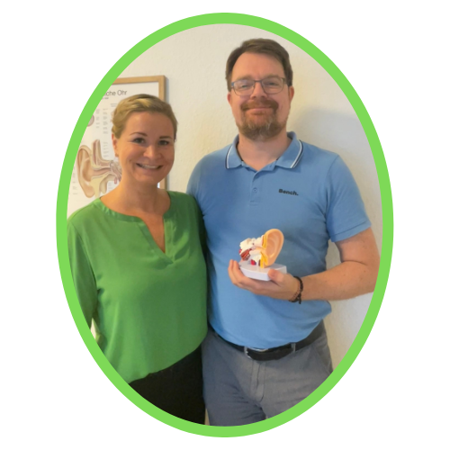

Was Sie im Tinnitus-Kompass erwartet
-
Die häufigsten Ursachen – endlich verständlich erklärt Lärm, Stress, Durchblutung, Nerven: Welcher Mechanismus steckt hinter Ihrem Tinnitus? Sie erkennen Muster, die Ihnen bisher niemand gezeigt hat.
-
Das Drei-Säulen-Modell der Tinnitus-Behandlung Warum ein einziger Ansatz selten reicht – und was wirklich wirkt, wenn Körper, Nervensystem und Psyche zusammenspielen.
-
Erste Übungen, die Sie sofort ausprobieren können Keine Theorie um der Theorie willen. Drei konkrete Schritte, die Sie noch heute angehen können.
Tinnitus-Kompass kostenlos sichern
E-Mail eintragen – Sie bekommen eine kurze Bestätigungsmail, und der Kompass kommt sofort danach. Kein Spam, jederzeit abmeldbar.
Nach dem Absenden erhalten Sie eine Bestätigungsmail. Erst nach dem Klick auf den Link darin wird der Kompass zugeschickt. So stellen wir sicher, dass die Mail wirklich Ihnen gehört.

Boris Seedorf, Heilpraktiker · Katharina Seedorf, EMDR-Fachtherapeutin für Tinnitus
Wir arbeiten seit Jahren spezialisiert mit Tinnitus-Betroffenen – Boris in der naturheilkundlichen Praxis in Ahrensburg, Katharina in der therapeutischen Begleitung mit EMDR. Der Kompass fasst zusammen, was wir unseren Patienten immer wieder erklären: Tinnitus hat viele Ursachen – und deshalb auch viele Ansatzpunkte.